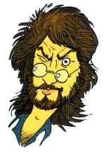
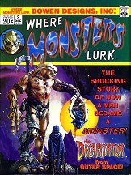
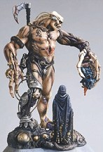

Bowen Designs has released The Decapitator! The is one elaborate kit! Seams are hidden so that little, if any, putty will be required. The detailing on the figure, base, and accessories is amazing. This original design kit was sculpted by the legendary Randy Bowen himself. I'm sure many of you have heard of Randys previous work, such as The Bowen Werewolf.
  
This cold cast porcelain kit is 12 inches tall includes a detailed base and comes complete with instructions and a really fun full-color collector box. It is available now at a price of $120.00 plus $10.00 shipping and handling. Contact:
The Gremlins in the Garage webzine is a production of Firefly Design. If you have any questions or comments please get in touch.
Copyright © 1994-1997 Firefly Design.